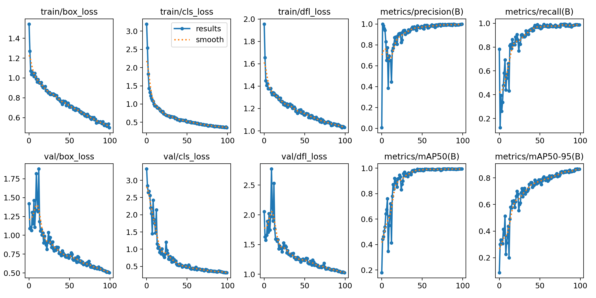
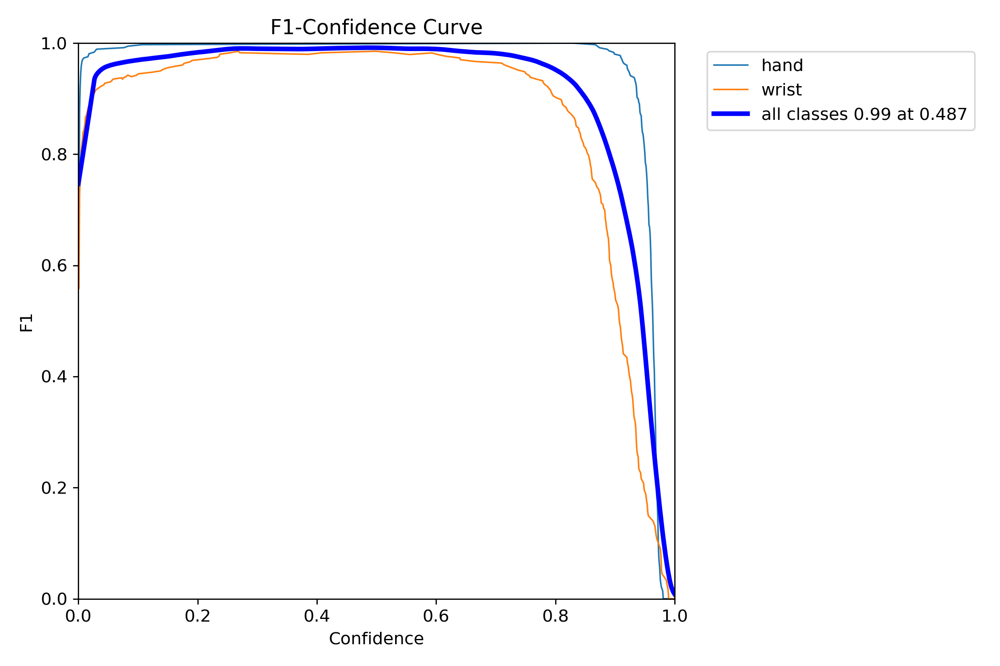

I want to share my method for building a Hand and Wrist detector that uses images of hands and has a model size of less than 6MB and an inference time of about 10ms on CPU. I thought of choosing one of these two object detection algorithms:
Faster RCNN, which is a two-stage algorithm that first proposes potential regions of interest using a region proposal network (RPN) and then classifies and refines these proposals, and YOLO, which is a one-stage object detection algorithm that provides real-time detection capabilities and is faster than RCNN for edge device computation.
Project Motivation
My goal was to create a system that can augment images of tattoos, jewelry, watches, or wristbands, on the detected region of a hand or wrist. I chose the YOLO algorithm because it is suitable for object detection on edge devices. I had previously used semantic segmentation with PyTorch Detectron2, but the model size was too large for my purpose. I needed a small model that could be deployed on cloud or edge devices.
Technical Implementation
I used the YOLOv8 model and PyTorch for this project. I trained the model on hand and wrist data that I labeled using LabelImg in YOLO format. The model takes an image as input and returns the image with a bounding box and a class label for the detected hand and wrist.
Dataset and Training
The dataset had 853 images with hand and wrist bounding box annotations. I split the dataset into 597 training images, 171 validation images, and 85 test images. I used data augmentation techniques such as rotation, translation, scaling, perspective transform, flipping, and cropping to enhance the image quality and generalization. I trained the model for 100 epochs with a batch size of 8 on a 3070 Ti GPU. The training took about 30 minutes.
YOLOv8 Architecture
My primary choice for this project was the YOLO (You Only Look Once) architecture, which is known for its fast and efficient object detection performance, making it suitable for edge device computation. YOLOv8 is an anchor-free model that abandons the previous anchor-based approach and directly predicts the object center, reducing the number of box predictions and speeding up the non-maximum suppression (NMS) step.
I initialized the model with pre-trained weights from ultralytics and optimized its performance by setting the initial learning rate to lr0 = 0.01, the momentum to 0.937, and applying weight decay to prevent overfitting and promote generalization. It uses VFL Loss from VarifocalNet and DFL Loss + CIOU Loss as categorical loss.
Results and Performance
The model achieved mean average precision (mAP50-95) of 0.8663, which means that it correctly detected 86.63% of the objects in the images. The model also achieved high precision (0.9991) and recall (0.9872).
